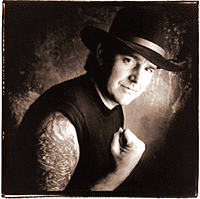

|
 Клубный блюз - тяжелая работа, но есть трудяги, которым она в радость... В 1987г., устав было от обычного графика на 300 концертов в год, Джимми Такери покинул группу "The Nighthawks", которую сам же основал в 1972 году вместе с харпистом по имени Mark Wenner. После пяти лет относительно спокойной жизни в ритмэндблюзовом секстете "The Assassins" он собирает трио "The Drivers", с которым отправляется вновь в изнурительные клубные туры. Временная разлука с прямолинейным блюз-роком пошла на пользу. Накануне сороколетия Текери играет его с не меньшим энтузиазмом, чем когда-то в "The Nighthawks", но его гитарные соло стали более изобретательны. Первый год с "The Drivers" Текери завершил альбомом "Empty Arms Motel" ("Мотель пустых объятий"). Альбом имел значительный успех и у широкой публики, и у критиков-спецов. Даже слегка снобский джазовый журнал "Dawnbeat" выдал рецензию на четыре звезды из 5 возможных, охарактеризовав работу в нетепично для этого издания восторженных тонах: "Текери обладает гитарным тоном, музыкальной мыслью, выразительной искренностью, подвижностью и упорядочностью, которые ставят его рядом с самой вершиной блюз-роковой элиты... голос столь же мужественен, отчаян, коварен, и радуете не меньше, чем его гитара..."
"...Thackery has the tonal control, musical thought, expressive sincerity, velocity, and discipline to rank near the top of the blues-rock heavyweight division...a voice that is virile, desperate, cunning, and no less satisfying than his imposing guitar..."
Down Beat (6/93, p.46)
Краткие данные по альбому и саммари передачи.
|